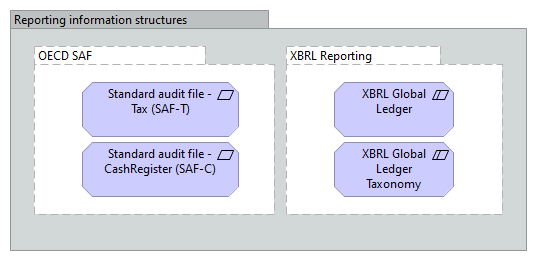

Accounts Reporting information structures
(
)

C.1.9 Information Structure Viewpoint The information structure viewpoint is comparable to the traditional information models created in the development of almost any information system. It shows the structure of the information used in the enterprise or in a specific business process or application, in terms of data types or (object-oriented) class structures. Furthermore, it may show how the information at the business level is represented at the application level in the form of the data structures used there, and how these are then mapped onto the underlying technology infrastructure; e.g., by means of a database schema. Table 21: Information Structure Viewpoint Description Information Structure Viewpoint Stakeholders Domain and information architects Concerns Structure and dependencies of the used data and information, consistency and completeness Purpose Designing Scope Multiple layer/Single aspect Elements • Business object • Representation • Data object • Artifact • Meaning
OECD SAF
Standard audit file - Tax (SAF-T)
Standard audit file - CashRegister (SAF-C)
XBRL Reporting
XBRL Global ledger
XBRL Global Ledger Taxonomy
OECD SAF
Standard audit file - Tax (SAF-T)
OECD SAF
Standard audit file - CashRegister (SAF-C)
XBRL Reporting
XBRL Global ledger
XBRL Reporting
XBRL Global Ledger Taxonomy